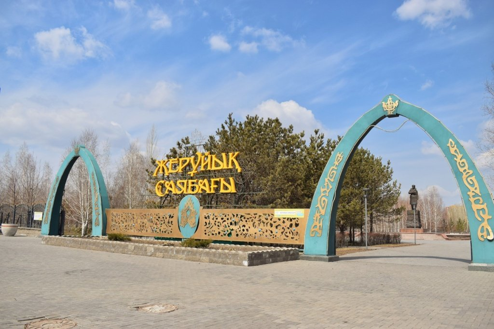

Фотосурет уақытша жүктелмеді')">«Жерұйық» — Астанадағы қоғамдық демалыс саябағы. Атауы халық аңыздарындағы бейбіт әрі берекелі қоныс идеясын еске салады. Саябақ қала тұрғындары мен қонақтарына серуендеуге арналған.
Қосымша ақпарат: adilet.zan.kz
Сурет: https://weproject.media/articles/detail/progulka-s-erzhanom-zhaparovym-mesta-gde-v-astane-mozhno-bezopasno-i-s-komfortom-zanimatsya-sportom/